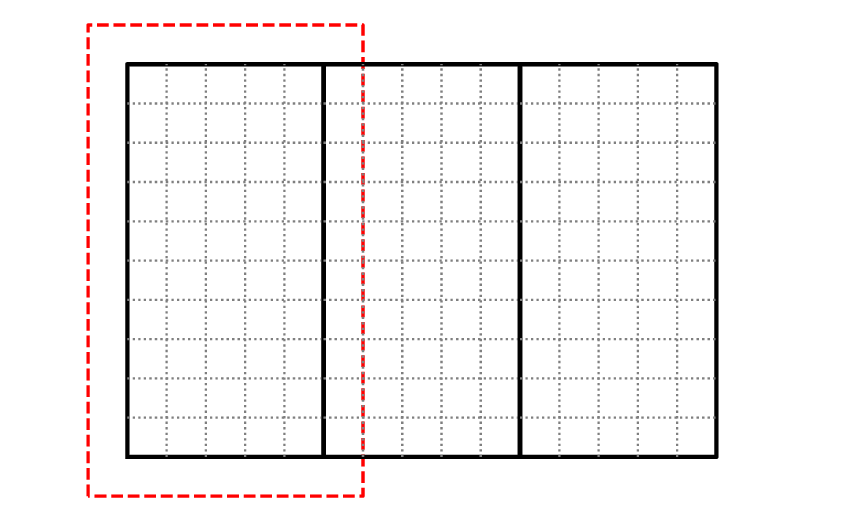

MPI Linear Advection Equation
Let’s look at a very crude way to solve the linear advection equation in two-dimensions:
We will do a very simple, first-order accurate discretization:
This discretization assumes that \(u > 0\) and \(v > 0\). In that case, it is upwinded.
Note
This is only stable for \(\mathcal{C} < 1/2\), where
Warning
This is a very bad discretization of advection. Our concern here is not on the accuracy of the method, but to demonstrate how to do the domain decomposition. For better methods for advection, see my lecture notes on advection.
The solution to the linear advection equation is to take what ever the initial \(a(x, y)\) is and move it with a speed \((u, v)\) with the shape unchanged.
We’ll use periodic boundary conditions and advect for a period, after which the solution should be identical to the initial conditions. Any differences are due to numerical (truncation) error in our discretization.
Tip
You can get all the code for this example here: https://github.com/zingale/phy504/tree/main/examples/parallel/mpi/advect
Domain decomposition
We will divide our domain along the x-direction:
{kind=link}
Each MPI process will manage their own subdomain. To make things easier, we will refer to a global index space on the entire domain.
For the figure above, the indices of the grids, (ilo, ihi, jlo, jhi) are:
left grid: (
0,4,0,9)middle grid: (
5,9,0,9)right grid: (
10,14,0,9)
Each of these grids will be managed by a separate MPI task. To deal with the boundaries of each grid, we will have a perimeter of ghost cells, shown as the red outline for the middle grid. We will use MPI send/recv to exchange data with the neighboring grids to fill these ghost cells.
For the physical boundaries, we will assume we are periodic.
Array
We want a version of our Array class that can
start at an arbitrary index, e.g., for the middle grid above (excluding ghost cells):
Array a(5, 9, 0, 9)
This is easy to do by adapting our existing Array class to include an offset:
#ifndef ARRAY_H
#define ARRAY_H
#include <vector>
#include <cassert>
#include <iostream>
#include <stacktrace>
#include <limits>
///
/// a contiguous 2-d array -- here the data is stored in row-major
/// order in a 1-d memory space managed as a vector. The array index
/// does not need to start at 0 here, instead a constructor is
/// provided that takes the starting index and ending index in each
/// dimension
///
class Array {
public:
int nx;
int ny;
private:
int _xoffset;
int _yoffset;
std::vector<double> _data;
public:
Array (int xlo, int xhi, int ylo, int yhi, double val=0.0)
: nx{xhi - xlo + 1}, ny{yhi - ylo + 1}, _xoffset{xlo}, _yoffset{ylo},
_data(nx * ny, val)
{
assert (nx > 0);
assert (ny > 0);
}
inline int xlo() const { return _xoffset;}
inline int ylo() const { return _yoffset;}
inline int xhi() const { return _xoffset + nx - 1;}
inline int yhi() const { return _yoffset + ny - 1;}
inline double& operator()(int i, int j) {
int row = i - _xoffset;
int col = j - _yoffset;
assert (row >= 0 && row < nx);
assert (col >= 0 && col < ny);
return _data[row * ny + col];
}
inline const double& operator()(int i, int j) const {
int row = i - _xoffset;
int col = j - _yoffset;
assert (row >= 0 && row < nx);
assert (col >= 0 && col < ny);
return _data[row * ny + col];
}
inline const double* data() const { return _data.data(); }
inline double* data() { return _data.data(); }
};
#endif
Grid
We will manage each processor’s subdomain with a grid class. This class
takes the domain size and number of points as well as each MPI processes rank
and the total number of MPI processes and computes the domain decomposition
for each rank.
It also has a method to generate an array allocated for that rank, including ghost cells.
#ifndef GRID_H
#define GRID_H
#include <cassert>
#include <cmath>
#include <format>
#include <iostream>
#include "array.H"
class Grid {
public:
double dx;
double dy;
int ng;
int ilo{-1};
int ihi{-1};
int jlo{-1};
int jhi{-1};
Grid(int _nx, int _ny, int _ng,
double _xmin, double _xmax, double _ymin, double _ymax,
int _rank, int _nprocs)
: ng(_ng)
{
assert (_xmax > _xmin);
assert (_ymax > _ymin);
assert (_nx > 0);
assert (_ny > 0);
dx = (_xmax - _xmin) / static_cast<double>(_nx);
dy = (_ymax - _ymin) / static_cast<double>(_ny);
// each processor will hold a slab with the i coordinates
// spanning ~ 1/_nx of the x-domain, and the j coordinates
// spanning the entire j range. We will refer to a
// global index space of _nx x _ny.
// note: with this decomposition, the data will be
// contiguous in memory on each processor
int iwidth = std::floor(static_cast<double>(_nx) /
static_cast<double>(_nprocs));
int iextra = _nx % _nprocs;
// the first iwidth processors have a width of iwidth+1
int mywidth = iwidth;
if (_rank < iextra) {
mywidth++;
}
// current processor's index space
if (_rank < iextra) {
ilo = (iwidth + 1) * _rank;
ihi = ilo + mywidth - 1;
} else {
ilo = (iwidth + 1) * iextra + iwidth * (_rank - iextra);
ihi = ilo + mywidth - 1;
}
jlo = 0;
jhi = _ny-1;
}
///
/// get a scratch array indexed on this rank's subdomain
/// with a perimeter of ghost cells
///
inline Array scratch_array() {
Array arr(ilo-ng, ihi+ng, jlo-ng, jhi+ng);
return arr;
}
};
inline std::ostream& operator<< (std::ostream& os, Grid g) {
os << std::format("i: ({:3}, {:3}); j: ({:3}, {:3})",
g.ilo, g.ihi, g.jlo, g.jhi);
return os;
}
#endif
Main program driver
The main program driver is pretty simple:
Create the grid on each MPI process
Set the initial conditions
Loop until we reach the final time
Compute the timestep
Fill the ghost cells
Update \(a\) to the new time solution
Output the solution
Here’s the code:
#include <iostream>
#include <print>
#include <mpi.h>
#include "grid.H"
#include "simulation.H"
#include "initialize.H"
#include "output.H"
#include "ghost_fill.H"
int main() {
MPI_Init(nullptr, nullptr);
int rank{-1};
MPI_Comm_rank(MPI_COMM_WORLD, &rank);
int nprocs{-1};
MPI_Comm_size(MPI_COMM_WORLD, &nprocs);
double start_time = MPI_Wtime();
// setup the grid
Grid g(domain::nx, domain::ny, domain::ng,
domain::xmin, domain::xmax, domain::ymin, domain::ymax,
rank, nprocs);
// create the memory for storing the old and new solution
auto a = g.scratch_array();
auto anew = g.scratch_array();
// initialize
initialize(g, a);
// output
double t{0.0};
if (simulation::do_output) {
output(g, t, a);
}
// evolve
int nstep{0};
while (t < simulation::tmax) {
// get dt
double dt = simulation::C * std::min(g.dx / simulation::u,
g.dy / simulation::v);
if (t + dt > simulation::tmax) {
dt = simulation::tmax - t;
}
// fill ghost cells
fill_ghost_cells(g, a);
// do the first-order unsplit update
// note: this is unstable for C > 0.5 because the update
// does not see the diagonal upwind cell
for (int i = g.ilo; i <= g.ihi; ++i) {
for (int j = g.jlo; j <= g.jhi; ++j) {
anew(i, j) = a(i, j)
- dt * simulation::u * (a(i, j) - a(i-1, j)) / g.dx
- dt * simulation::v * (a(i, j) - a(i, j-1)) / g.dy;
}
}
t += dt;
nstep++;
if (rank == 0) {
std::println("n = {:4d}; t = {:6.4f}; dt = {:8.4g}", nstep, t, dt);
}
a = anew;
}
if (simulation::do_output) {
output(g, t, a);
}
if (rank == 0) {
std::cout << "elapsed time: " << MPI_Wtime() - start_time << std::endl;
}
MPI_Finalize();
}
There are two places where MPI communication comes into play—the ghost cell filling and the outputting.
Ghost cell filling
For the ghost cell filling, each processor has a subdomain in an
array, a. We need to fill a(ilo-1, :) by receiving data from the left, and in exchange, we need to pass a(ilo, :) to the left to fill the left process’s a(ihi+1, :).
Our domain decomposition is done such that we are contiguous in the j index, that means
that we can specify the start of the column of data corresponding to ilo-1 as a(ilo-1, jlo-ng)
and then using the MPI call to send the entire column of elements.
There are two MPI_Sendrecv calls, one for the left and the other for the right.
#ifndef GHOST_FILL_H
#define GHOST_FILL_H
#include <mpi.h>
#include "array.H"
#include "grid.H"
#include "simulation.H"
///
/// fill ghostcells, assuming doubly periodic
///
inline void fill_ghost_cells(const Grid& g, Array& a) {
// we are doing a 1-d domain decomposition in the x-direction
int rank{-1};
MPI_Comm_rank(MPI_COMM_WORLD, &rank);
int nprocs{-1};
MPI_Comm_size(MPI_COMM_WORLD, &nprocs);
// first do the periodic fill in the y-direction -- this is all
// local
for (int i = g.ilo-g.ng; i <= g.ihi+g.ng; ++i) {
a(i, g.jlo-1) = a(i, g.jhi);
a(i, g.jhi+1) = a(i, g.jlo);
}
// now fill the interior ghost cells
{
// send the first column of valid data to the left to fill the
// left PE's right ghost cells, and receive from the right PE.
// Wrap periodically.
int sendto = rank == 0 ? nprocs - 1 : rank - 1;
int recvfrom = rank == nprocs - 1 ? 0 : rank + 1;
MPI_Status status;
MPI_Sendrecv(&a(g.ilo, g.jlo-g.ng), a.ny, MPI_DOUBLE, sendto, 0,
&a(g.ihi+1, g.jlo-g.ng), a.ny, MPI_DOUBLE, recvfrom, 0,
MPI_COMM_WORLD, &status);
}
{
// send the last column of valid data to the right to fill the
// right PE's left ghost cells, and receive from the left PE.
// Wrap periodically.
int sendto = rank == nprocs - 1 ? 0 : rank + 1;
int recvfrom = rank == 0 ? nprocs - 1 : rank - 1;
MPI_Status status;
MPI_Sendrecv(&a(g.ihi, g.jlo-g.ng), a.ny, MPI_DOUBLE, sendto, 1,
&a(g.ilo-1, g.jlo-g.ng), a.ny, MPI_DOUBLE, recvfrom, 1,
MPI_COMM_WORLD, &status);
}
}
#endif
Outputting
Only rank 0 will output, so we need to move the data from all the other
ranks to rank 0. This is called serial I/O. We just output the data
one cell per line, with an empty line between rows. This can be read into
gnuplot easily.
#ifndef OUTPUT_H
#define OUTPUT_H
#include <cmath>
#include <fstream>
#include <format>
#include <mpi.h>
#include "array.H"
#include "grid.H"
#include "simulation.H"
///
/// write out the data by copying everything to rank 0
///
inline void output(const Grid& g, double t, const Array& a) {
int rank{-1};
MPI_Comm_rank(MPI_COMM_WORLD, &rank);
int nprocs{-1};
MPI_Comm_size(MPI_COMM_WORLD, &nprocs);
// rank 0 will do all of the writing
std::ofstream ofile;
if (rank == 0) {
auto tstr = std::format("t{:5.3f}", t);
ofile.open("advection_" + tstr + "_mpi.out");
}
for (int n = 0; n < nprocs; ++n) {
if (n == 0) {
// write out rank 0's data. No communication needed
for (int i = g.ilo; i <= g.ihi; ++i) {
for (int j = g.jlo; j <= g.jhi; ++j) {
ofile << a(i, j) << std::endl;
}
ofile << std::endl;
}
} else {
// we are working on a rank > 0, so we need to copy the
// data over to rank 0
if (rank == n) {
// transfer the index range
int irange[2] = {g.ilo, g.ihi};
MPI_Send(irange, 2, MPI_INT, 0, n, MPI_COMM_WORLD);
// now transfer the data -- we'll send everything,
// including the ghost cells
MPI_Send(a.data(), a.nx * a.ny, MPI_DOUBLE,
0, n, MPI_COMM_WORLD);
} else if (rank == 0) {
// receive the index range from rank n
MPI_Status status;
int irange[2] = {0, 0};
MPI_Recv(irange, 2, MPI_INT, n, n, MPI_COMM_WORLD, &status);
// create a buffer to hold the data we will receive
Array a_buf(irange[0]-g.ng, irange[1]+g.ng,
g.jlo-g.ng, g.jhi+g.ng);
auto ierr = MPI_Recv(a_buf.data(), a_buf.nx * a_buf.ny, MPI_DOUBLE,
n, n, MPI_COMM_WORLD, &status);
if (ierr != MPI_SUCCESS) {
std::cout << "error in recv: " << ierr << std::endl;
}
// output the buffer to the file
for (int i = irange[0]; i <= irange[1]; ++i) {
for (int j = g.jlo; j <= g.jhi; ++j) {
ofile << a_buf(i, j) << std::endl;
}
ofile << std::endl;
}
}
}
}
}
#endif
Initialization and parameters
We will do a simple smooth Gaussian as the initial conditions.
#ifndef INITIALIZE_H
#define INITIALIZE_H
#include <cmath>
#include <mpi.h>
#include "array.H"
#include "grid.H"
#include "simulation.H"
///
/// initialize the solution with a Gaussian
///
inline void initialize(const Grid& g, Array& a) {
double xc = 0.5 * (domain::xmin + domain::xmax);
double yc = 0.5 * (domain::ymin + domain::ymax);
for (int i = g.ilo; i <= g.ihi; ++i) {
double x = domain::xmin + (static_cast<double>(i) + 0.5) * g.dx;
for (int j = g.jlo; j <= g.jhi; ++j) {
double y = domain::ymin + (static_cast<double>(j) + 0.5) * g.dy;
a(i, j) = 1.0 + std::exp(-60.0 * (std::pow(x - xc, 2) +
std::pow(y - yc, 2)));
}
}
}
#endif
Finally, there is one additional header that holds the problem parameters.
Note
In a real simulation code, these would come via an inputs file that is read at runtime.
#ifndef SIMULATION_H
#define SIMULATION_H
namespace domain {
constexpr int nx{512};
constexpr int ny{512};
constexpr int ng{1};
constexpr double xmin{0.0};
constexpr double xmax{1.0};
constexpr double ymin{0.0};
constexpr double ymax{1.0};
}
namespace simulation {
constexpr double C{0.4};
constexpr double tmax{1.0};
constexpr double u{1.0};
constexpr double v{1.0};
constexpr bool do_output{true};
}
#endif
Running
Here’s a GNUmakefile:
HEADERS := $(wildcard *.H)
SOURCES := $(wildcard *.cpp)
OBJECTS := $(SOURCES:.cpp=.o)
ALL: advection
CXXFLAGS := -Wall -Wextra -Wshadow -std=c++23 -g -O2
%.o : %.cpp ${HEADERS}
mpic++ -c ${CXXFLAGS} $<
advection: ${OBJECTS} ${HEADERS}
mpic++ -o $@ ${OBJECTS} -lstdc++exp
clean:
rm -f *.o advection
Note
I am using C++20 here, because I wanted to use std::print() and std::format().
The code can be executed as:
mpiexec -n 4 ./advection
To plot the output, we can do:
set term x11 persist
set view map
set size ratio -1
set autoscale fix
splot 'advection_t1.000_mpi.out' notitle w pm3d
Scaling
Our algorithm is very simple, so there is not much floating point work / zone. As a result, it is easy for the communication to dominate over the computation. In a real simulation code, we’d do something much more complicated to get a better solution, and this would not be as much of an issue.
We also have one major serial part in our code—I/O. Amdahl’s law says that eventually this will dominate our runtime as we increase the number of processors.
Tip
In order to see good scaling, we need to run a reasonable large
problem size, like \(512^2\) and disable I/O (by changing
simulation::do_output)